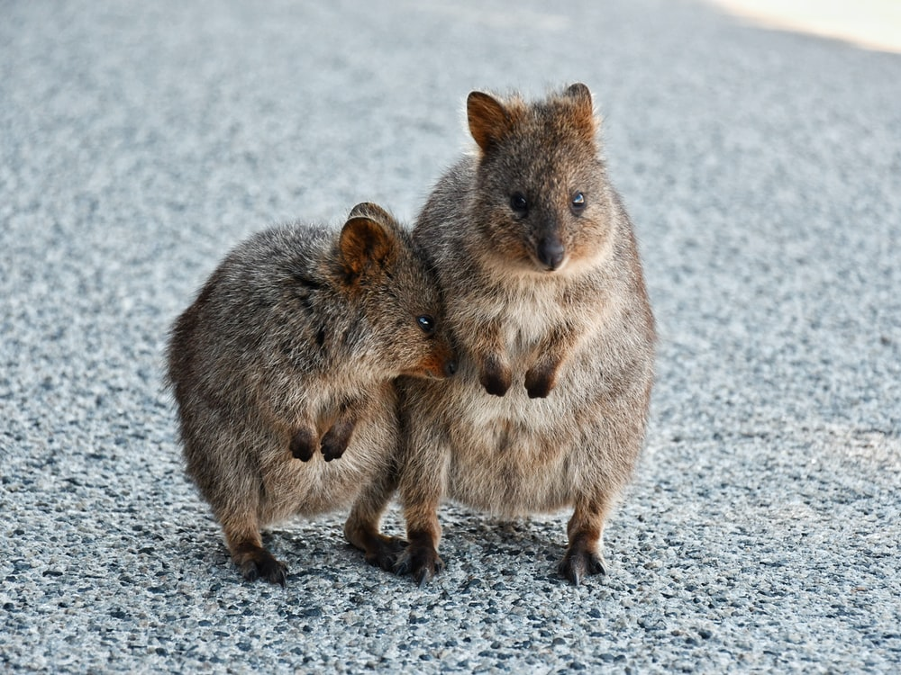

Quokka
Quokkas are dubbed the happiest animal because they always look like they're smiling. Because of this, quokkas have become famous for instagram selfies. Quokkas are located in Western Australia. Quokkas live for about ten years. Quokkas are herbivore marsupials like kangaroos. Marsupials have pouches where offspring are raised and can feed on milk. Quokkas are nocturnal and mainly feed at night, eating mostly grasses, leaves, stems, and bark. Quokka's population status is vulnerable with its population decreasing. Red foxes have contributed to some of the population decrease. However, the largest population of Quokkas is on Rottnest Island, a location free of foxes, a popular destination in Australia, where quokkas appear to come out in the daytime to mingle with visitors.
